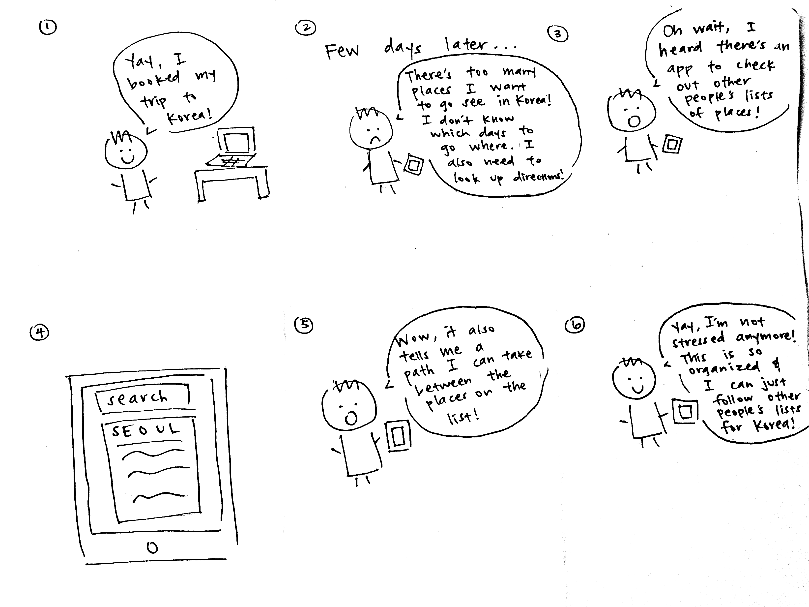

RoadRunner
Mobile Web Development

Summary
This application was developed for a 10-week Human-Computer Interaction Programming Studio course. The challenge was to design and develop and modern mobile web application with a focus on geographical and map-related applications. We created RoadRunner, an app for creating, customizing, and sharing day trip itineraries using a custom mapping interface.
My Role
I acted primarily as a front-end web developer. My focus was on creating the interface components for the apps using HTML, CSS/Sass, and Javascript. I also implemented Google Maps API to support the core map functionality of the app.
Problem
Currently, planning fun day trips requires the use of multiple applications such as Google Maps, TripAdvisor, and Yelp. This can make the planning process lengthy and difficult, especially if the user is trying to explore new and unfamiliar places. TripAdvisor is hailed as one of the best trip planning services available, yet it has no feature for connecting multiple points of interest on a map and providing directions to each point. We believe this is an important feature to have as it encourages users to explore more than one place and to think about a trip as more than just traveling from point A to point B.
Solution
We created an app that incorporates features from Google Maps, TripAdvisor, and Yelp to create an all-in-one experience that makes trip planning easy and fun! With our app, users can create their own lists of destinations, as well as search for other places they're interested in and discover lists for those places, all on one website. We also allowed users to share and explore other users' lists to encourage social interaction.
Images
User Scenario

Paper Prototype of User Flow

Final Design and Features
View Final Prototype